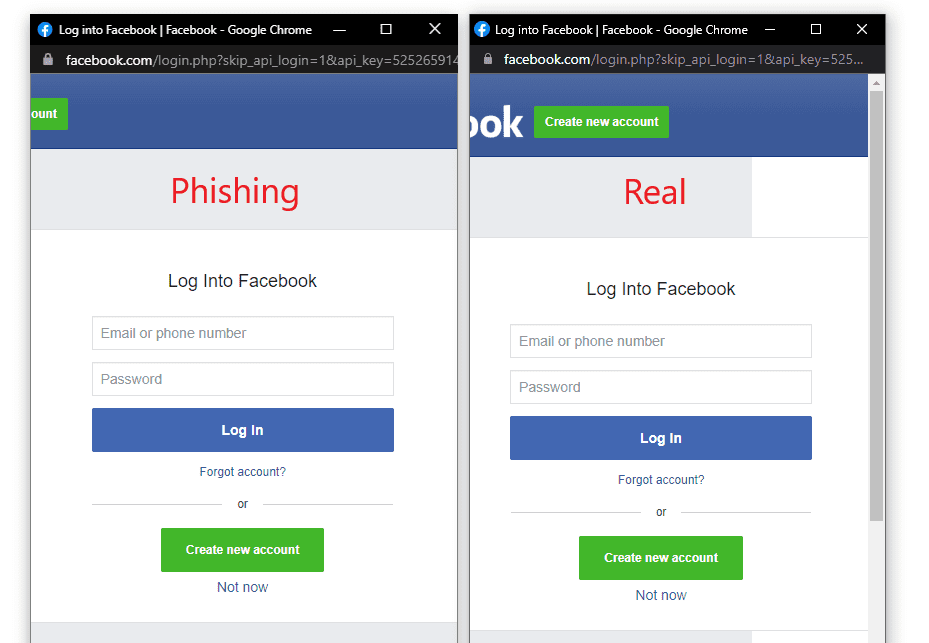

Hola bienvenidos, todos los que estan leyendo esto saben o tienen una idea de lo que es el phising, en situacion de que no lo sepas te lo explicare rapidamente, el phising es una de las formas de robo de credenciales mas utilizado por los cibercrimirnales para obtener informacion como tarjetas de credito, cuentas bancarias, correos electronicos, etc. Lo que hacen es mandarte un correo que contendra un link el cual si das click te mandara a una pagina web falsa identica a la original, por ejemplo te mandan un correo diciendo que sucedio una alerta de seguridad en tu cuenta y que necesitan que confirmes tus datos, si das click en link veras que te mandara a la pagina web original, o eso es lo que tu crees, en realidad seria una pagina web que han clonado en un servidor para robar tus datos, si tu escribes tus credenciales y das enter estarias mandando esos credenciales a la maquina del ciberdelincuente. Este seria el peligro que abarcaria el phising actualmente. Ya hablare de como protegerse en otro post, ahora hablemos por lo que hemos llegado todos aqui.
Que es un phising Browser in the Browser?
Es una nueva tecnica de phising, que al parecer lleva mucho rato circulando pero nadie se habia dado cuenta, este phising a diferencia del convencional te redirige a una pagina en el servidor del atacante y en vez de mostrarte un formulario te mostrara un boton, el cual si le das click te abrira una ventana en tu navegador con un formulario, si te pusieras a observar verias que tiene el certificado https y ademas es la url oficial, pero te estan engañando, en realidad todo lo que se ve en aquella ventana fue programado con html, y te hacen pensar que estas en la pagina oficial para que ingreses tus datos.

puedes ver mas informacion dando click en la imagen
Lo mas peligroso de esta nueva tecnica es que es bastante eficiente ya que no levanta sospecha alguna y puede pasar facilmente desapersivido.
Bueno espero haberte informado hasta la proxima.